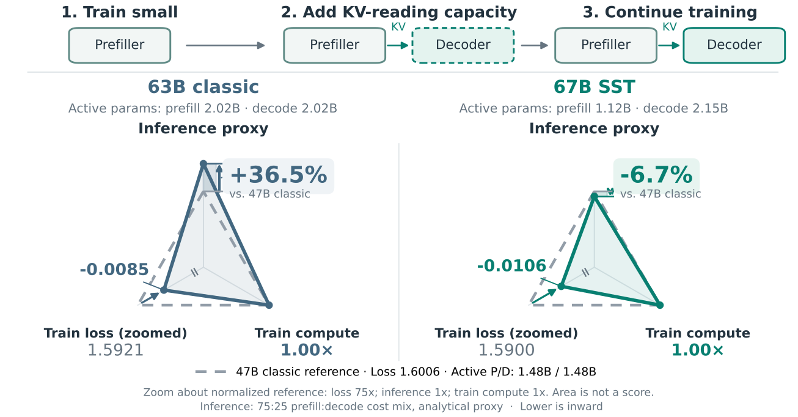
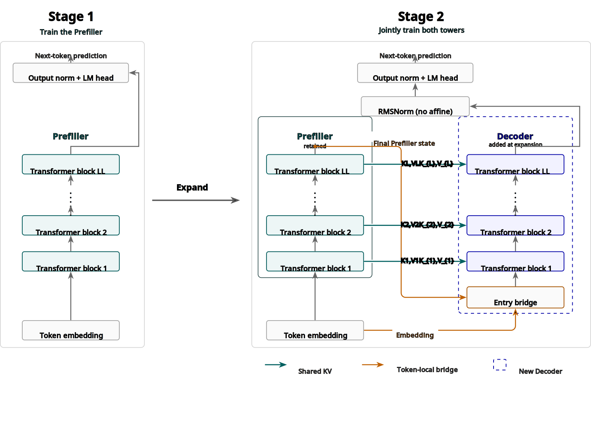
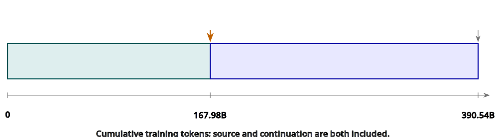
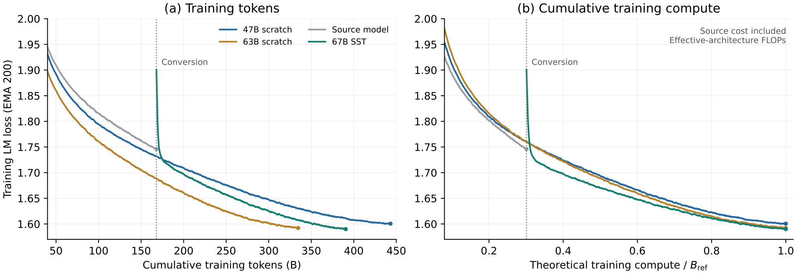
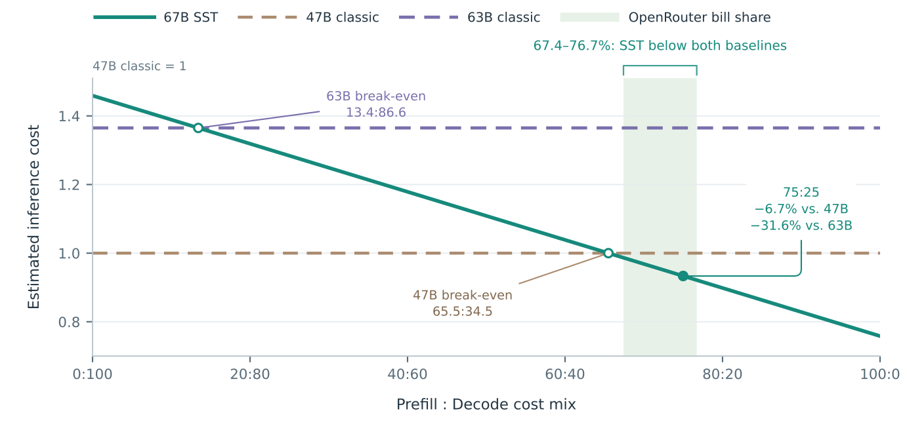
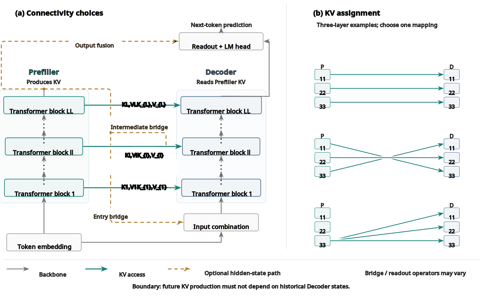

把模型做大，训练和推理的账要一起算。StepFun的KITE提出一种扩容范式：新增参数全部放在不影响KV的区域，prefill只用小模型部分算，推理不涨价；新增容量在训练中途加入，训练也省钱。下文拆解。
大模型的规模红利是祝福也是诅咒：更大带来更强，但训练和推理都要天价算力。扩容研究的核心问题是怎么用更低的算力把模型做大， MoE是个成功例子：稠密FFN换成稀疏专家路由，同等参数量下训练和推理计算都降，或者说同等算力下容量更大。
MoE容易被忽略的一点是它同时省了训练和推理。只省一边的方案，另一边会把账要回来。渐进式upcycling先训小模型，中途长成目标模型，大部分token预算跑在便宜图上；但upcycle出来的模型通常打不过同尺寸从零训的，训练省的钱在推理端还回去： serve的是完整目标模型，拿到的却是打折的质量。
KV复用走另一边。深层复用浅层算好的key和value，YOCO一系让模型长大时prefill依然便宜；但砍掉产KV的层会伤质量，追回质量要更大模型或更长训练，等于训练端亏了。两边都是一轴赚一轴亏。
KITE把两个成本一起算：扩容时把模型分成两个区域，决定KV张量的区域，和不影响KV的区域，容量只往后者加。新增容量在训练中途出现，买到的质量训练成本划算；KV计算不动，推理的prefill成本也不动。质量、训练成本、推理成本三者同时向好。
这对Agent负载尤其值钱：反复调用处理累积上下文和新工具输出，即使有prompt缓存，仍有大量未缓存输入。OpenRouter公开流量显示，六个模型未缓存输入的token量都超过输出，占了费用大头。省prefill就是省大钱。

图1是KITE的训练路线与三向权衡：以47B从零训的Transformer为参照，内圈为优。SST 67B的推理代理成本比47B低6.7%，比63B低31.6%。
| 模型 | 输入/输出token | 未缓存输入/输出token | 未缓存输入费用占比 |
|---|---|---|---|
| GPT-6 Astra | 106.43× | 14.64× | 74.6% |
| GPT-6 Astra Pro | 63.15× | 14.01× | 73.8% |
| Claude Fable 5 | 63.38× | 16.29× | 76.7% |
| Claude Sonnet 5 | 59.88× | 12.12× | 70.8% |
| Gemini 3.7 Flash | 37.79× | 10.15× | 67.4% |
| Gemini 3.8 Flash | 46.14× | 10.51× | 67.9% |
KITE的具体实例叫Step Scale Transformer。两个同深度解码器塔顺序执行：Prefiller产出逐层KV，Decoder复用这些KV预测下一个token。生成时bulk prefill只跑第一个塔，prompt边界预测和decode跑两个塔。先训好源模型，扩容后双塔联合继续训。
设计原则写成式子：(M_t, z_t) = P(x_1:t; θ_P)，l_t = D(x_t, z_t, M_t; θ_D)。M_t是可复用的注意力记忆，z_t是位置t的可选Prefiller特征，l_t是下一个token的logits。不变量是结构性的：权重和KV值都不冻结，但Decoder不得产出未来位置需要的记忆；生成时要跳过历史Decoder计算，被保留的Decoder位置在给定Prefiller输出下必须与被跳过的位置独立。这样预测容量增长，bulk prefill不动。首token的最终位置读出和decode时Decoder的工作依然必要。

SST里Prefiller先跑完产出逐层KV，每Decoder块自己算query，读对应Prefiller层的KV：q^D_l,t = Q^D_l(h^D_l-1,t)，a^D_l,t = Attn(q^D_l,t, K^P_l[I_l(t)], V^P_l[I_l(t)])。I_l(t) 是原始因果全/滑动注意力掩码允许的位置。Decoder块参数独立，残差与FFN/MoE都是token局部的。
双塔共享embedding，Decoder入口用token局部桥接：h^D_0,t = RMS_ε(e_t) + RMS_ε(h^P_L,t)，其中RMS_ε(v) = v / √(mean(v²) + ε)，ε 取1e-5，无训练参数。预测用Decoder末态：l_t = W_out Norm_out(h^D_L,t)。梯度经入口桥和复用的KV流回Prefiller；给定Prefiller输出，每Decoder位置与更早的Decoder状态独立。
执行上：训练时Prefiller跑全序列，Decoder算每个监督位置；prefill时Prefiller处理完整prompt产出KV cache，Decoder只算最后一个prompt位置就能预测首token，更早的Decoder位置可省；decode时每新token过双塔，Prefiller扩展KV cache，Decoder读KV预测。
SST把33.819B参数的源模型扩到66.959B，源塔原样保留为Prefiller。评测的路线是167.98B源阶段token加222.55B延续token。47B和63B经典基线是同一模型家族scaling ladder上源模型之上的两档，加深加宽、保留MoE与注意力模式。

扩容时把源checkpoint的每层同时拷进Prefiller和Decoder对应层，双塔共享一份embedding、输出norm和输出头。之后BF16联合训双塔，优化器沿用源模型的Muon和Adam参数组：Prefiller与共享参数保留优化器状态，Decoder用新状态；全组沿源余弦学习率继续，剩余衰减铺到延续阶段，Decoder不单独warmup。
算力按有效架构的理论FLOPs比：C_train = 3(D_s f_s + D_c f_c)，3倍是前向加反向。47B经典checkpoint定义B_ref ≈ 5.16836×10²¹ FLOPs，最终SST与63B端点都约用满100% 这份预算，SST的两阶段全计入。
图3是到评测checkpoint的训练路线：13350步源训练接17687步延续。
| 配置 | 源模型 | SST | 47B经典 | 63B经典 |
|---|---|---|---|---|
| 层数 | 18 | 18+18 | 20 | 22 |
| 隐宽 | 2304 | 2304 | 2560 | 2816 |
| MoE层 | 16 | 16+16 | 18 | 20 |
| 路由/选中专家 | 512/8 | 512/8 | 512/8 | 512/8 |
| 注意力模式 | SSSF | SSSF | SSSF | SSSF |
| 总参数(B) | 33.819 | 66.959 | 46.727 | 62.691 |
| decode活跃body参数(B/token) | 1.120 | 2.155 | 1.477 | 2.016 |
SST的loss在转换点上跳然后随延续训练下降。终点EMA-200：SST 1.5900（390.54B token），47B经典1.6006（443.16B token），63B经典1.5921（334.62B token）。可比累计训练算力下SST的训练loss最低。

七个下游任务同checkpoint评测，SST全面最好：OpenBookQA 75.00对68.50/71.00，MMLU 60.54对58.44/59.39，GSM8K 58.38对56.56/55.04，MATH 34.36对33.06/33.14，HumanEval 37.80对35.98/32.93，MBPP 51.40对50.40/50.80，BBH 52.74对50.36/52.56；ARXIV held-out NLL 1.4421对1.4521/1.4424。最低的训练loss确实转化成了最好的下游表现。
推理成本按prefill:decode混合看，代理成本 = 0.75p + 0.25d，p、d是相对47B归一化的bulk-prefill与decode活跃body数。SST与63B在13.4:86.6打平，与47B在65.5:34.5打平，prefill占比越高SST越便宜。75:25下SST比47B低6.7%，比63B低31.6%。OpenRouter六个模型的未缓存输入账单占比67.4到76.7%，落在这个区间SST全程比两个基线便宜：比47B低1.3到7.9%，比63B低27.7到32.5%。

注意这是解析代理成本比较，不是实测服务加速。相对47B，SST拿更低的bulk-prefill计算换更高的decode计算，prefill重的负载下代理成本更低。
| 任务 | 47B经典 | 63B经典 | 67B SST |
|---|---|---|---|
| OpenBookQA | 68.50 | 71.00 | 75.00 |
| MMLU | 58.44 | 59.39 | 60.54 |
| GSM8K | 56.56 | 55.04 | 58.38 |
| MATH | 33.06 | 33.14 | 34.36 |
| HumanEval | 35.98 | 32.93 | 37.80 |
| MBPP | 50.40 | 50.80 | 51.40 |
| BBH | 50.36 | 52.56 | 52.74 |
| ARXIV NLL(越低越好) | 1.4521 | 1.4424 | 1.4421 |
SST是KITE的一个具体实现，不是唯一答案。对齐的逐层KV复用、入口桥、Decoder独立读出都是设计选择。核心要求只有一条：新增容量不延长产KV的计算，不引入需要历史Decoder状态的依赖。

Prefiller KV与Decoder层的配对不必一一对应，也不必保序。Decoder层可以倒序读Prefiller KV，也可以多层复用同一个KV源。图6展示了几种连法。
隐状态连接是另一个自由度：Prefiller表示可以在Decoder入口进，也可以在中间层进，还可以参与最终读出。桥算子、两部分的深度与宽度都可以变，只要保持因果访问与接口兼容，不必同成本同质量。
实验只探了这个设计空间的一小块，报告的是选定SST配置的性能，没找最优连法。KITE的价值是给这些选择一个公共的研究框架，不把架构锁死在SST的连法上。
Net2Net研究保函数的模型增长，SPARKLING看宽度渐进学习的信号保持；dense转MoE的upcycling用稠密checkpoint初始化稀疏专家，SST则是在训练中途给已稀疏的源模型加Decoder。MQA/GQA/CLM降的是存的注意力状态，KITE扩的是容量而不延长产KV路径。YOCO把产缓存与用缓存的计算分开并做prefill早退，SST把这个执行模式用在分阶段增长上；Mixture-of-Recursions的固定KV循环可看作KITE家族中参数绑定的特例，SST用独立参数在训练中扩容。
参考：https://arxiv.org/html/2609.27294v1